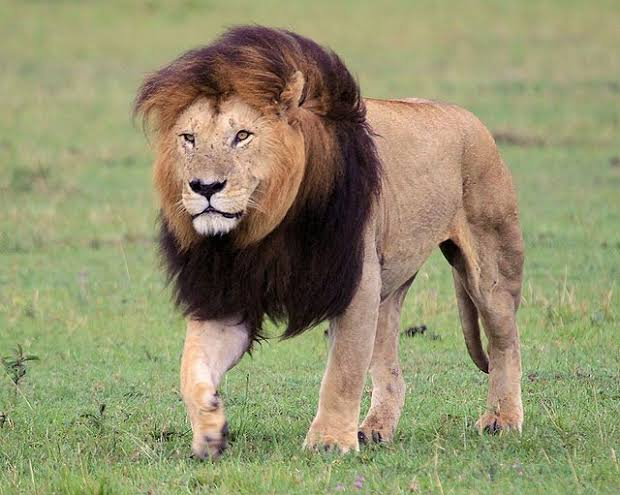
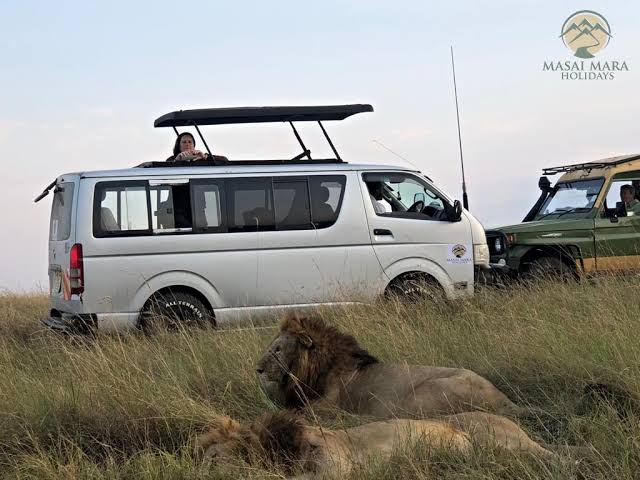

Kenya Wildlife Service (KWS) is a state corporation established in 1989 by an Act of Parliament to conserve and manage Kenya's wildlife resources.
The service was created to address the growing need for effective wildlife conservation and management in Kenya. Over the years, KWS has played a crucial role in protecting the country's rich biodiversity and promoting sustainable use of natural resources.

The service was created to address the growing need for effective wildlife conservation and management in Kenya. Over the years, KWS has played a crucial role in protecting the country's rich biodiversity and promoting sustainable use of natural resources.
